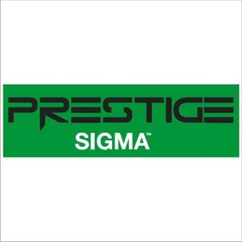

Trade Mark Journal No.2025/016 18 April 2025
WO0000001827976 (19)
Office of origin: Turkey
Date of International Registration:14 October 2024
Date of designation in the UK:
14 October 2024

- Class 19
- Sand, gravel, crushed stone, asphalt, bitumen, cement, gypsum for use in construction, road construction, repair and covering work; building materials (as finished products) made of concrete, gypsum, clay, potters' clay, natural or artificial stone, wood, plastics and synthetic materials for building, construction, road construction purposes, included in this class; non-metallic buildings, nonmetallic building materials, non-metallic transportable buildings, poles, not of metal for power lines, barriers not of metal, doors and windows of wood and synthetic materials; traffic signs not of metal, non-luminous and non-mechanical, for roads; monuments and statuettes of stone, concrete and marble; natural and synthetic surface coatings in the form of panels and sheets, being building materials; heat adhesive synthetic surface coating, being building materials; bitumen cardboard coatings for roofing; bitumen coating for roofing; building glass; prefabricated swimming pools not of metal (structures); aquarium sand.
CERTUS ALCI VE DOKUM TEKNOLOJI SANAYI ANONIM SIRKETI
Representative: AKYOL SINAI MULKIYET VE DANISMANLIK HIZMETLERI LTD.STI., Mithatpasa Cad. No: 16/17,, Kizilay, Ankara, TURKEY